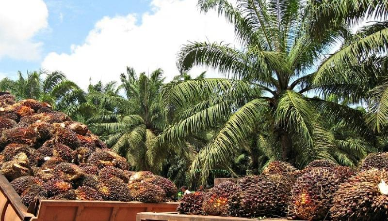
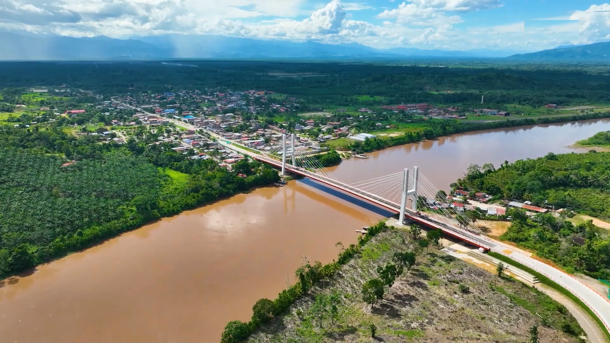

Galería de Imágenes


Un Distrito emeregente e industrial del mundo moderno te espera
Explorar Ahora
Santa Lucia, Tocache, San Martin, Perú
Santa Lucía es un distrito perteneciente a la provincia de Tocache, en el departamento de San Martín, Zona clave para el desarrollo agrario. El gobierno regional (GORESAM) y empresas privadas como Grupo Palmas apoyan a cientos de palmicultores.

Ingreso a la ciudad
Santa Lucia, Tocache, San Martin, Perú
Coordenadas: 8°20′50.73″S 76°23′24.479″O
Altitud: 506 msnm
Tour completo: 3 horas
Circuito 1: 2 horas con 30 minutos desde la ciudad de Tingo Maria
Circuito 2: 1 hora desde la ciudad de Tocache
Llevar protector solar
Ropa cómoda y zapatos de trekking
Documento de identidad